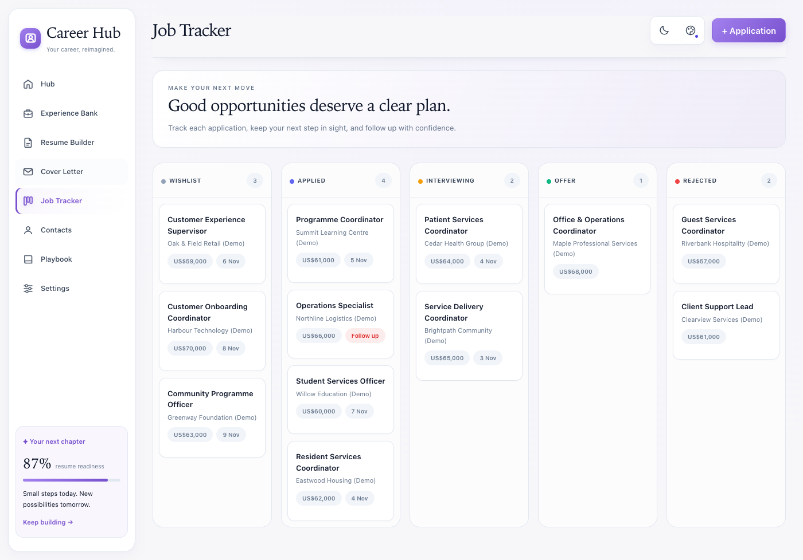
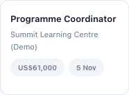
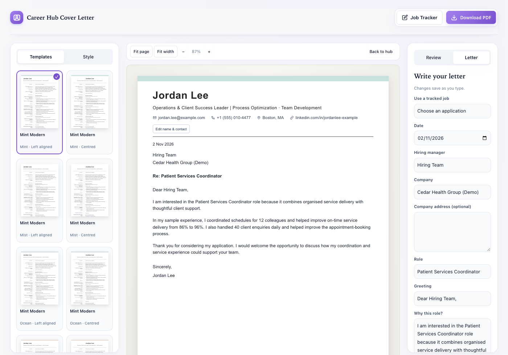
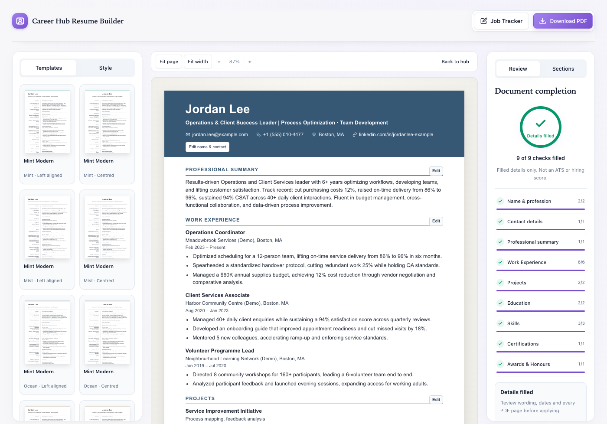
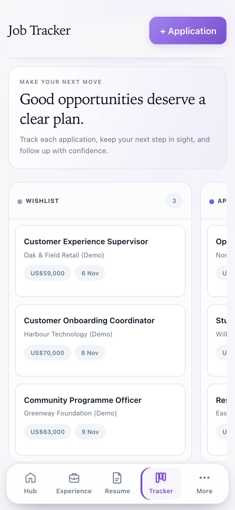

CAREER HUB · REAL APP DEMO
Your experience.
A new look.
Choose a style — keep your details
JOB APPLICATION TRACKER
Move it.
Keep track.
Real drag: Applied → Interviewing


MATCHING COVER LETTER
One application.
Details filled.
Choose a tracked job to fill company and role

RESUME · COVER LETTER · JOB TRACKER
Save PDF.
Keep moving.
Real app screens · Jordan Lee example data

